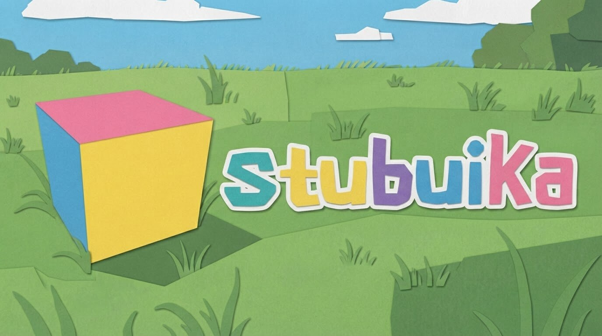

More than one format
Work with APKs and supported bundles, including APKM, XAPK, APKS, and AAB. Package support depends on the contents and app requirements.
Package guideDesktop Android compatibility runtime
Bring Android packages to your desktop. Stubuika is an experimental runtime for Linux, Windows, and macOS, built to bridge Android apps with your everyday computer.

Stubuika loads Android application packages directly on a desktop host. It translates guest ARM code and connects selected Android services, graphics, audio, and media to the computer underneath.
It is not a promise that every app will work. It is a growing compatibility layer, with room to experiment and improve.
Explore the architectureKeep the workflow that fits. The graphical launcher, command line, and terminal dashboard are all part of Stubuika.
Work with APKs and supported bundles, including APKM, XAPK, APKS, and AAB. Package support depends on the contents and app requirements.
Package guideARM guest execution meets selected Android APIs and desktop graphics, audio, input, and media services.
Compatibility notesLaunch from the desktop, automate common tasks from the shell, or navigate the keyboard-first terminal interface.
CLI and TUI guide
Use the desktop application for a visual workflow. When you need scripting or keyboard navigation, the CLI and TUI are there too.
Graphical launcherKeep the desktop entry point.
Command lineLaunch and inspect from your shell.
Terminal dashboardNavigate with your keyboard.
Use the CLI for quick commands and scripts, or open the full-screen TUI to move through the available launcher tools without leaving the keyboard.
Read the CLI guide$ stubuika tui
Illustrative interface preview. Live runtime details are shown by the application on your machine.
Release assets are fetched directly from GitHub. Choose an available build, or use the source guide to compile Stubuika yourself.
git clone --recurse-submodules https://github.com/flessan/stubuika.git
Stubuika is experimental. A successful installation does not guarantee that a particular Android app will run.
Practical notes for installation, packages, configuration, and troubleshooting.
Stubuika is a downstream fork and continuation of Lunaria, originally created by Yuichiro Nakada. The upstream project remains the foundation, and its authorship and license are acknowledged with care.
Read the attribution notes